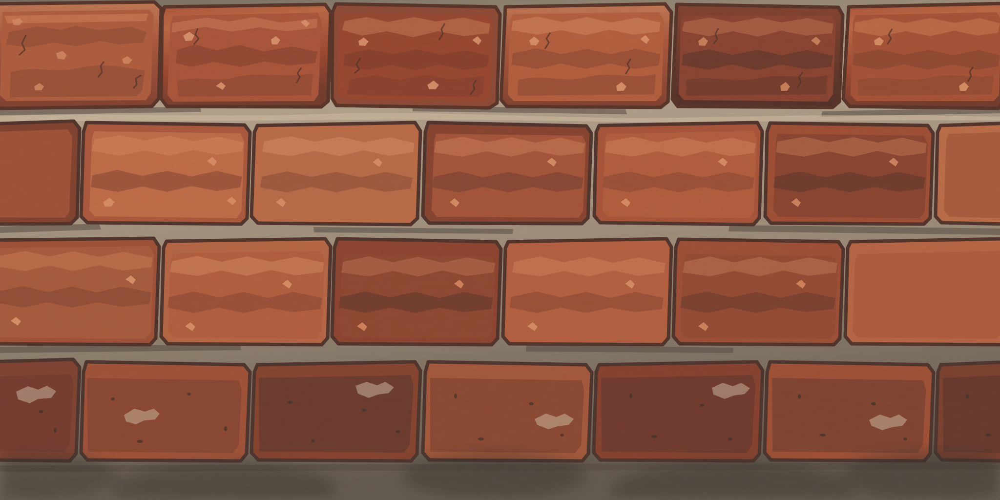
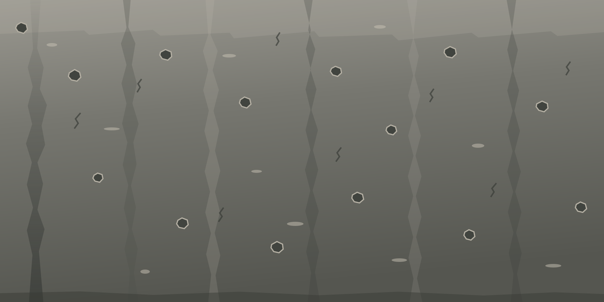
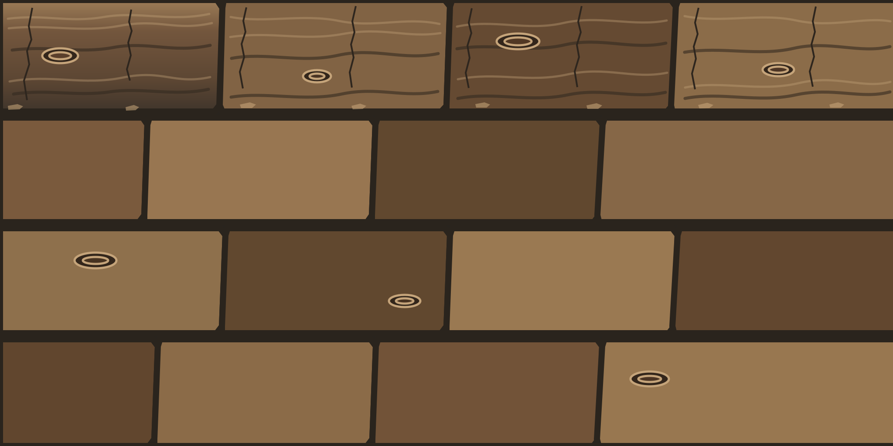
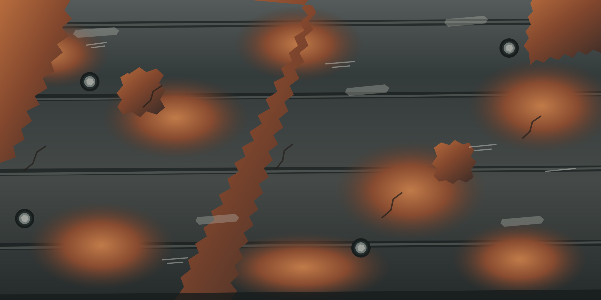
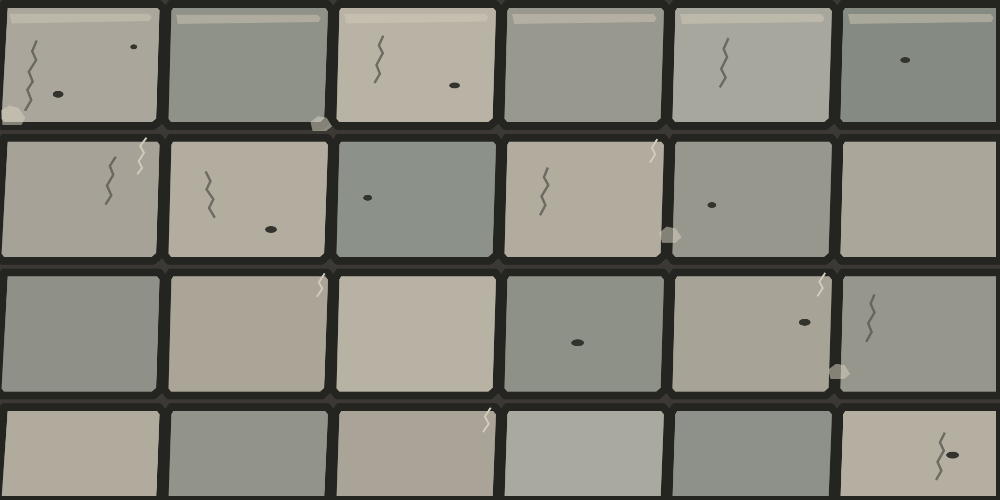

This collection is moving away from generated recipes. Each listed surface is a separate, authored artwork with its own geometry, wear, stains and material character. No texture noise engine, external image library, CDN or third-party runtime.





Inspect the original SVG master or export a high-resolution PNG. PNG export scales the authored drawing; it does not invent new detail.
Ready. Choose an authored surface above.
8K export scales the current artwork to 8192 × 4096. It cannot add photographic micro-detail that is not in the master. Large exports may use substantial memory; if the browser runs out of memory, choose 4K or download the SVG master.